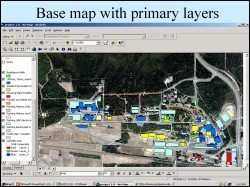

 Recent constructions on the UAF campus have altered the campus so that now we have new buildings, new roads, parking lots, altered shuttle bus routes and increased parking problem. The campus map available from the UAF web site and the information office do not reflect these changes. The first objective of this study was to use GPS measurements for the new buildings (such as the expanded museum complex) and new roads (such as the meandering Koyukuk drive) and update teh existing campus map. The second objective of the study was to identify clear areas that could be developed into new parking lots. The third objective of the study was to analyse if the currently operated shuttle bus routes were ideal - and if not - suggest a possible modification/addition to the current shuttle bus routes.
A high resolution airborne digital photograph of the UAF campus area was used as the base image for this project. Individual buildings and roads were digitized on this image as polygons and line features. A Garmin76 GPS was set to acquire data at the same projection as the aerial photograph and then data was collected by walking along recently constructed roads and buildings. This GPS data was imported into ArcGIS and plotted as additional vector layers to generate an updated map of the UAF campus.
Area for a possible new parking lot was identified on the North side of the GI building, by spatial anlysis and querying to identify a specified stretch of land which is in close proximity to office space yet is not obstructed itself by roads, trails and other constructions. A new possible shuttle bus route was proposed starting from the GI building, going to the Student Recreation Center and onward to the Wood Center. This route was suggested after looking at the tonal variation in the aerial photographs, created by many people walking on the otherwise green grass, from the GI building to the recreation center.